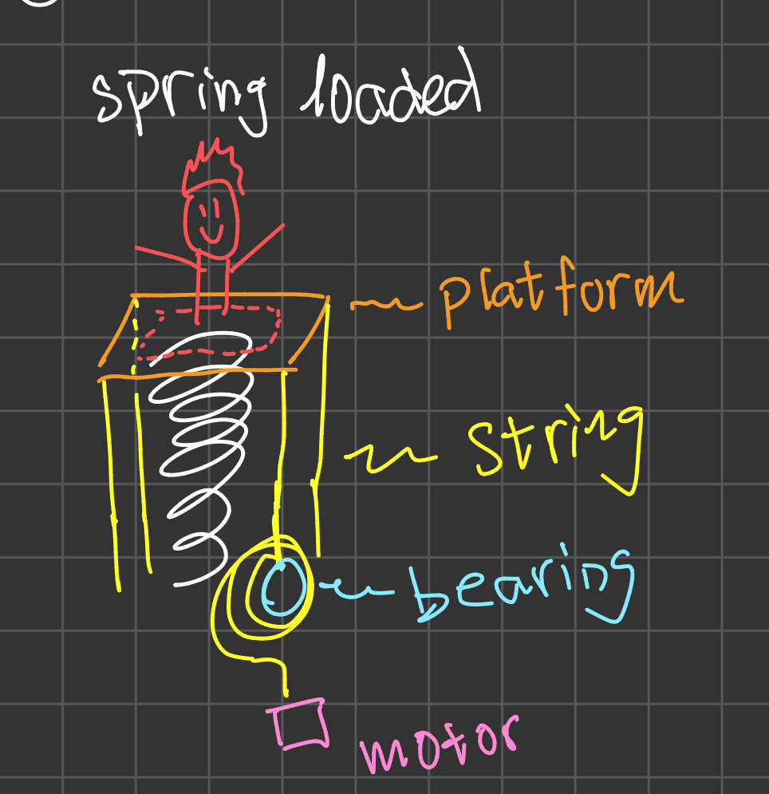

Overview
The Jack in the Box project is a mechanical and automated system acting as a "jump scare" mechanism for Halloween haunted houses. All components were selected after precise analysis and calculations (choosing the best spring, motor, and cable for example).
System
Draft Simple Concept Idea
A flat platform is placed on top of the spring. Cables are connected to the platform and wrapped around a bearing before being connected to a motor. When the motor receives power, the cables will wrap around the bearing to ultimately compress the spring. When a motion detector sensor goes off, the motors power will cut out, causing the bearing and string to spin loose due to the spring force.